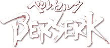
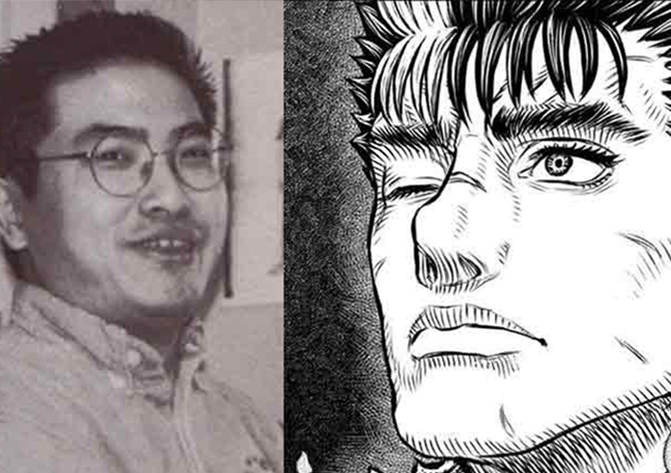
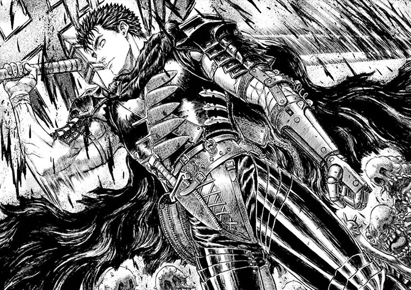
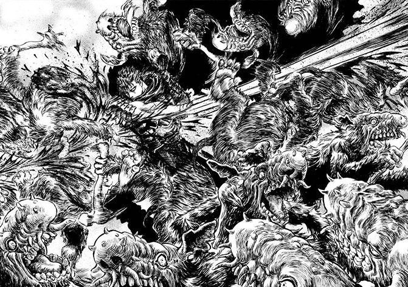

<!DOCTYPE html>
<html>
<head>
    <meta charset="UTF-8">
    <meta name="viewport" content="width=device-width, initial-scale=1.0">
    <title>Berserk - Legacy</title>
    <link rel="stylesheet" href="https://use.typekit.net/khn4vnx.css">
    <link rel="stylesheet" href="https://cdnjs.cloudflare.com/ajax/libs/font-awesome/4.7.0/css/font-awesome.min.css">
    <script src="https://ajax.googleapis.com/ajax/libs/jquery/3.5.1/jquery.min.js"></script>
    <link href="https://stackpath.bootstrapcdn.com/font-awesome/4.7.0/css/font-awesome.min.css" rel="stylesheet" integrity="sha384-wvfXpqpZZVQGK6TAh5PVlGOfQNHSoD2xbE+QkPxCAFlNEevoEH3Sl0sibVcOQVnN" crossorigin="anonymous">
    <script src="scripts/scripts.js"></script>
    <link href="css/styles.css" rel="stylesheet">
</head>
</html>

<header>
    <nav id="main-nav">
        <ul class="header-grid">
            <a class="bezerk-home" href="index.html">
                
            </a>
            <a p class="characters-button" href="characters.html">characters</a></p>
            <a p class="story-button" href="story.html">story</a></p>
            <a p class="legacy-button" href="legacy.html">legacy</a></p>

        </ul>
    </nav>

    <nav id="mobile-nav">
        <div id="drawer">
            <div class="hamburger-and-logo">
                <a class="bezerk-home" href="index.html">
                    
                </a>
                <button class="controls"><i class="fa fa-bars" aria-hidden="true"></i></button>
                    
            </div>
			<div class="contents">
                <a p class="characters-button" href="characters.html">characters</a></p>
                <a p class="story-button" href="story.html">story</a></p>
                <a p class="legacy-button" href="legacy.html">legacy</a></p>
			</div>
		</div>
    </nav>
   
</header>

<body>
    <h4>legacy</h4>


<div class="legacy-main-part">
    <div class="legacy-images">
            <!-- Image container of the image slider -->
            <div class="image-container">
                <div class="slide">
                    <div class="slideNumber">1</div>
                    
                </div>
                <div class="slide">
                    <div class="slideNumber">2</div>
                    
                </div>
                <div class="slide">
                    <div class="slideNumber">3</div>
                    
                </div>
        
                <!-- Next and Previous icon to change images -->
                <a class="previous" onclick="moveSlides(-1)">
                    <i class="fa fa-chevron-circle-left"></i>
                </a>
                <a class="next" onclick="moveSlides(1)">
                    <i class="fa fa-chevron-circle-right"></i>
                </a>
            </div>
            <br>
        
            <div style="text-align:center">
                <span class="footerdot"
                    onclick="activeSlide(1)">
                </span>
                <span class="footerdot"
                    onclick="activeSlide(2)">
                </span>
                <span class="footerdot"
                    onclick="activeSlide(3)">
                </span>
            </div>
        
            <script>
                var slideIndex = 1;
                displaySlide(slideIndex);
        
                function moveSlides(n) {
                    displaySlide(slideIndex += n);
                }
        
                function activeSlide(n) {
                    displaySlide(slideIndex = n);
                }
        
                /* Main function */
                function displaySlide(n) {
                    var i;
                    var totalslides =
                        document.getElementsByClassName("slide");
                    
                    var totaldots =
                        document.getElementsByClassName("footerdot");
                    
                    if (n > totalslides.length) {
                        slideIndex = 1;
                    }
                    if (n < 1) {
                        slideIndex = totalslides.length;
                    }
                    for (i = 0; i < totalslides.length; i++) {
                        totalslides[i].style.display = "none";
                    }
                    for (i = 0; i < totaldots.length; i++) {
                        totaldots[i].className =
                        totaldots[i].className.replace(" active", "");
                    }
                    totalslides[slideIndex - 1].style.display = "block";
                    totaldots[slideIndex - 1].className += " active";
                }
            </script>
    </div> 
</div>

    <div class=body-characters-text>
        <h5>Legacy</h5>   
        <p>Berserk is regarded as one of the most influential dark fantasy works.Peter Fobian, in an essay of the legacy and impact of Berserk, called it a "monolith not only for anime and manga, but also fantasy literature, video games, you name it," comparing its level of influence to Blade Runner, further adding: "it's difficult to imagine what the world might look like without it, and the generations of creators the series inspired."</p>

        <p>According to writer and editor Kazushi Shimada, series like Fullmetal Alchemist, Attack on Titan, Demon Slayer: Kimetsu no Yaiba or Jujutsu Kaisen would not have existed if not for Berserk. Some dark fantasy manga authors who have declared influence from Berserk include Hajime Isayama (Attack on Titan), Kazue Kato (Blue Exorcist) and Yana Toboso (Black Butler).[242] Other authors influenced by Berserk include Makoto Yukimura (Vinland Saga), Yūki Tabata (Black Clover) and Ryōgo Narita (Baccano! and Durarara!!). Adi Shankar, showrunner of the Castlevania animated series, said in an interview that he would like to adapt Berserk, calling the "hyper-detailed beauty" of Miura's artwork a "true masterpiece", while Adam Deats, Castlevania assistant director, stated that the show was inspired by Berserk.</p>

        <p>Critics like Gene Park of The Washington Post and Ramsey Isler of IGN stated that Berserk started a visual trend of characters wielding giant swords that spread to Cloud Strife from Final Fantasy VII, Dante from Devil May Cry, and Ichigo Kurosaki from Bleach.</p>

        <p>Berserk has also inspired a number of video games, including the Dynasty Warriors series, the Final Fantasy series (considerably Final Fantasy VII and XIV), the Dark Souls series, Bloodborne, Sekiro: Shadows Die Twice, Elden Ring, and Capcom's Devil May Cry and Dragon's Dogma series.</p>

        <p>Finnish heavy metal band Battle Beast have written songs about Berserk, including several on their 2013 self-titled album. When guitarist Anton Kabanen left Battle Beast in 2015, he formed Beast in Black and continues to write songs about the series. The deathcore band Brand of Sacrifice released the album God Hand in 2019. Both the band and album are hugely inspired by Berserk. In 2021, deathcore band Slaughter to Prevail released a music video for their song "Zavali Ebalo", which featured scenes from the Berserk 1997 anime series.</p>
    </div>
   
    <footer>
        <div class="designed-by">
            <p> &#169; 2023</p>
            <p>Designed by Cameron Thompson</p>
            <a p class= source href="https://en.wikipedia.org/wiki/Berserk_(manga)">Bezerk - Wikipedia</a></p>
            <a p class= source href="https://en.wikipedia.org/wiki/List_of_Berserk_characters">List of Bezerk Characters - Wikipedia</a></p>
        </div>
    </footer>

</body>
</html>